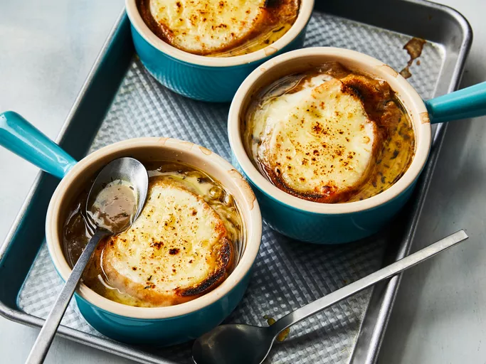

French Onion Soup

Description
There's nothing cozier than a warm bowl of freshly made French onion soup. With this top-rated recipe, you can make restaurant-worthy French onion soup in the comfort of your own kitchen. Plus, get our best ingredient tips and storage secrets.
French onion soup is traditionally topped with Gruyère, but other cheeses can be used. Most French onion soups are topped with three cheeses for maximum decadence.
This recipe calls for Parmesan, provolone, and Swiss. Other popular choices include Fontina and mozzarella. No matter which cheeses you choose, make sure not to skimp! French onion soup should be rich and indulgent.
Ingredients
- 1/2 cup unsalted butter
- 2 tablespoons olive oil
- 4 cups sliced onions
- 5 cups beef broth
- 2 tablespoons dry sherry
- 1 teaspoon dried thyme
- 1 pinch salt and pepper to taste
- 4 slices French bread
- 4 slices Provolone cheese
- 2 slices Swiss cheese
- 1/4 cup grated Parmesan
Directions
- Gather all ingredients
- Melt butter with olive oil in an 8-quart stock pot over medium heat. Add onions to butter and continually stir until tender and translucent. Do not brown the onions.
- Add beef broth, sherry, and thyme. Season with salt and pepper. Let simmer for 30 minutes. Meanwhile, preheat the oven's broiler.
- Ladle soup into oven-safe serving bowls and place one slice of bread on top of each (bread may be broken into pieces if you prefer). Layer each slice of bread with a slice of provolone, 1/2 slice diced Swiss and 1 tablespoon Parmesan cheese.
- Place bowls on a cookie sheet and broil in the preheated oven until cheese bubbles and browns slightly, 2 to 3 minutes.
- Serve hot and enjoy!
Home